Chapter 2 Data Visualisation
This chapter will focus on purely on data visualisation in R. We wont be using the base R plotting function. Instead we will be using a package called ggplot2 which is based on the grammer of graphics to do up some simple and elegant plots.
ggplot2 is build upon a 2 level data hierachy:
Default plot ggplot() requires:
- Data Set
- Aesthetic mapping
Layers comprises of the 5 key components:
- Data
- Aesthetic Mappings
- Geometric Objects
- Statistics Transformation
- Position
There are more but will will focus mainly on this first.
For illustrative and teaching purposes, we will be using the pokemon datasets, which is gotten from https://www.kaggle.com/abcsds/pokemon.
Before we can start, we have to download and load the required packages as well as load the csv files.
2.1 Initialise your environment
Install the following package
# you only need to install it once
install.packages("ggplot2")Load the packages into RStudio
library(ggplot2)ggplot2 comes with a few loaded packages.
To check them out simply type the following command
data(package = "ggplot2")To show all the available function within dplyr,
ls("package:ggplot2")2.2 Import the Dataset
Before we can import the Data Sets, we have to ensure the the .csv file is the same project folder. we can first check if we are in the correct directory by using getwd()
# check if the dataset is in the same project folder
getwd()If it is not in the same project folder, we can set it manually by passing the correct path into the function setwd().
setwd(" ")Once these are settled, we can import the datasets using the read.csv() function.
# import the dataset
pokemon <- read.csv(file = "Pokemon.csv")We can do some prelimanry check on the attributes of the datasets
class(pokemon)
dim(pokemon)
names(pokemon)
str(pokemon)2.3 Introduction
ggplot() and ggplot(data = pokemon) when called produces a blank grey plot with nothing on it yet.
ggplot()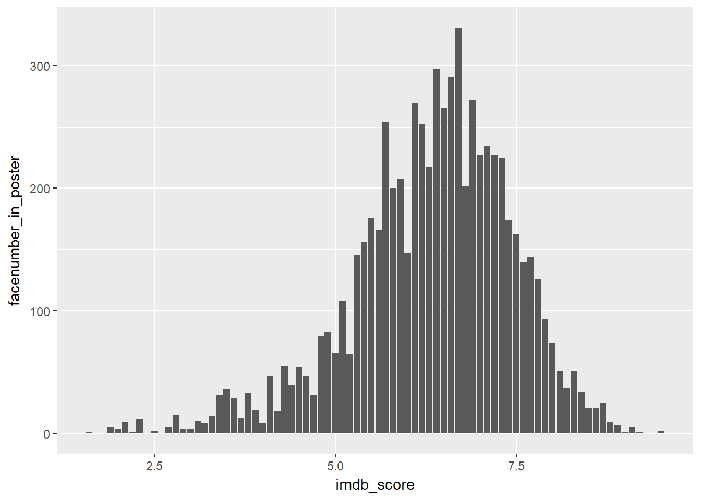
ggplot(data = pokemon)
By associating a mapping to it such as assigning the column Attack in the pokemon data frame to the x-axis and Defense to the y-axis, we get a blank plot with labelling.
However, there is still no visual aspect of it yet.
ggplot(data = pokemon,
mapping = aes(x = Attack, y = Defense))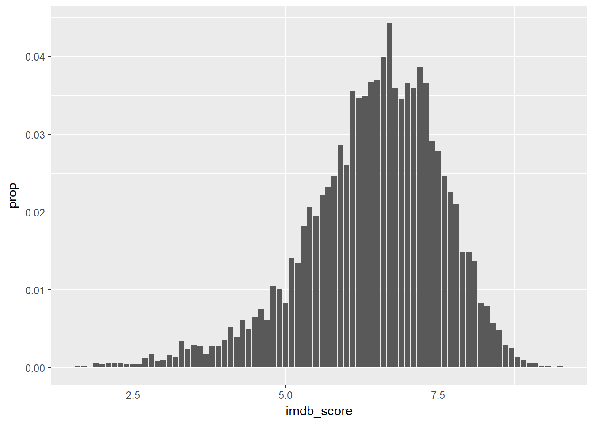
What we have to do next is to assign a geometric object to it the plot, say point, if we want to draw a scatter plot.
By default, a full ggplot2 specification of the scatterplot of Attack vs Defense is,
ggplot() +
layer(data = pokemon,
mapping = aes(x = Attack, y = Defense),
geom = "point",
stat = "identity",
position = "identity") +
scale_y_continuous() +
scale_x_continuous() +
coord_cartesian() 
The following does the same thing as above except now we have uses the function geom_point(), which is a wrapper for the whole chunk of text above.
ggplot() +
geom_point(data = pokemon, mapping = aes(x = Attack, y = Defense))
2.4 Aesthetic
Aesthetics are the visual properties property of the objects in your plot.
Various aesthetic properties available are:
- Colour
- Shape
- Transparncy
- Size
There are many more as we shall see later on.
We can either set aesthetics automatically or manually.
Automatically (Mapping)
For automatic mapping, the properties goes inside of aes().
Colour
ggplot(data = pokemon) +
geom_point(mapping = aes(x = Attack, y = Defense,
colour = factor(Generation)))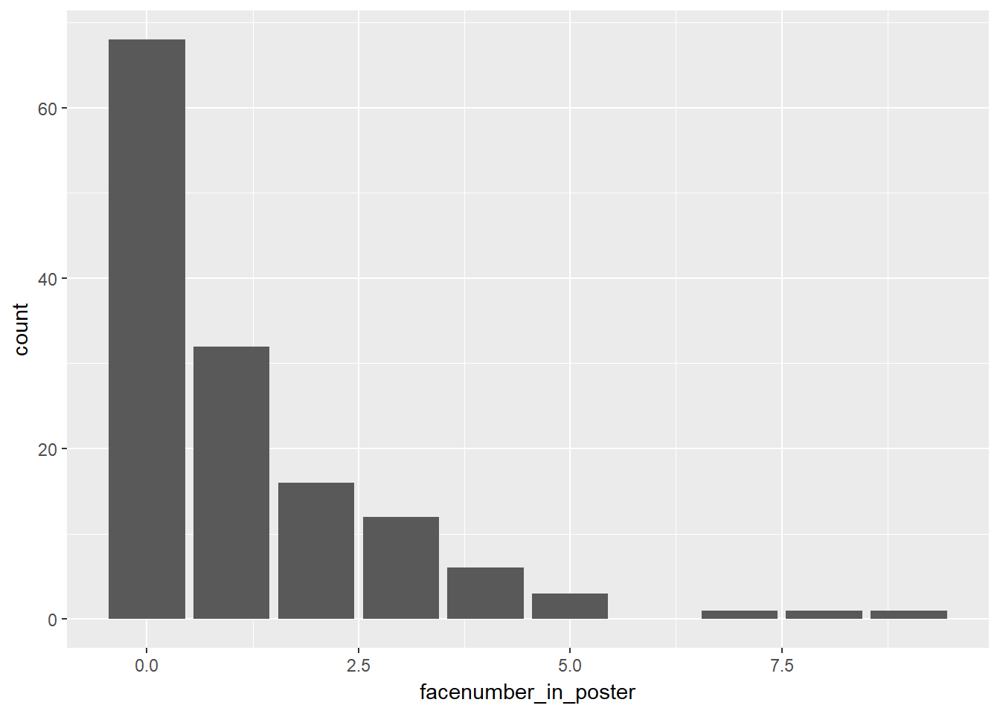
Shape
ggplot(data = pokemon) +
geom_point(mapping = aes(x = Attack, y = Defense,
shape = factor(Generation)))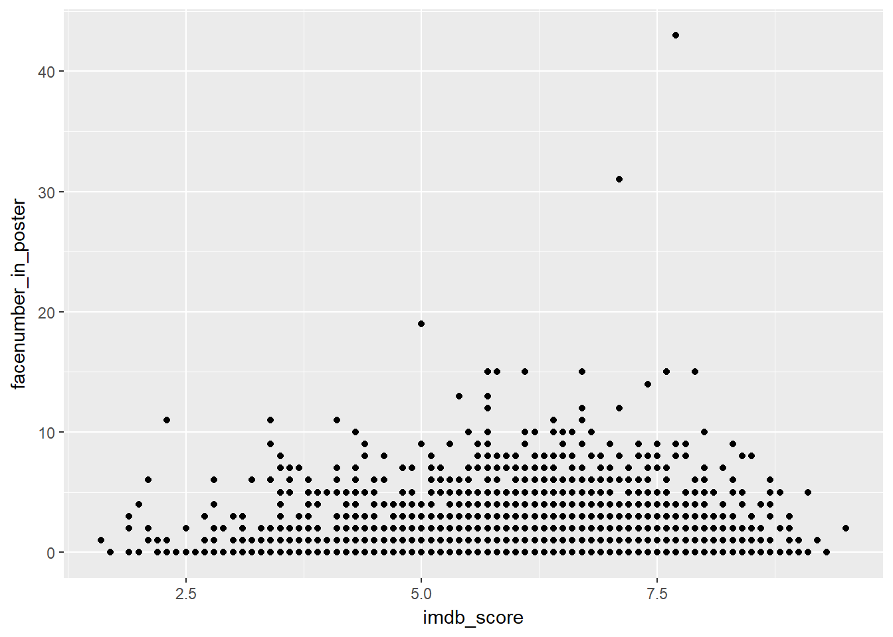
Transparency (alpha)
ggplot(data = pokemon) +
geom_point(mapping = aes(x = Attack, y = Defense,
alpha = factor(Generation)))
Size
ggplot(data = pokemon) +
geom_point(mapping = aes(x = Attack, y = Defense,
size = factor(Generation)))## Warning: Using size for a discrete variable is not advised.Manually (Setting)
For manual assignment, the properties goes outside of aes().
Colour
ggplot(data = pokemon) +
geom_point(mapping = aes(x = Attack, y = Defense),
colour = "blue")Shape
ggplot(data = pokemon) +
geom_point(mapping = aes(x = Attack, y = Defense),
shape = 1)
We can specify custom shape using quote eg. “&”
ggplot(data = pokemon) +
geom_point(mapping = aes(x = Attack, y = Defense),
shape = "&")
Transparency (alpha)
ggplot(data = pokemon) +
geom_point(mapping = aes(x = Attack, y = Defense),
alpha = 0.1)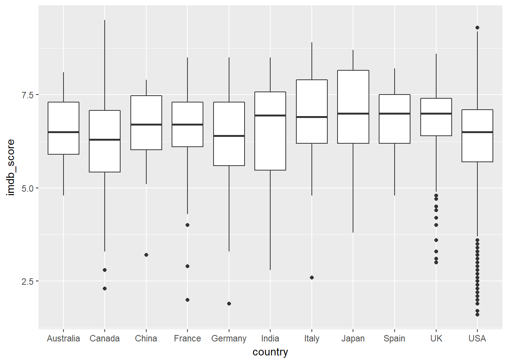
Size
ggplot(data = pokemon) +
geom_point(mapping = aes(x = Attack, y = Defense),
size = 10)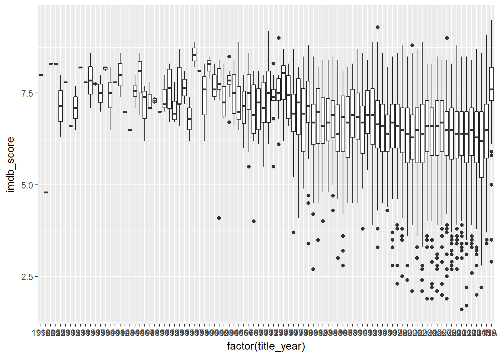
The following properties allows us to customised our point object:
- colour <-> border colour
- fill <-> colour within the shape
- size <-> shape size
- stroke <-> border size
Exercise
- Try manually specifying the various colour attributes.
ggplot(data = pokemon) +
geom_point(mapping = aes(Attack, Defense),
shape = 21,
colour = "red",
fill = "black",
stroke = 2,
size = 4)2.5 Geometric
Geometric specifies the type of chart that we want to draw like objects like points, bar, line, polygon etc
This shows a list of all the available geom object in ggplot2
ls("package:ggplot2", pattern = "^geom")## [1] "geom_abline" "geom_area" "geom_bar"
## [4] "geom_bin2d" "geom_blank" "geom_boxplot"
## [7] "geom_col" "geom_contour" "geom_count"
## [10] "geom_crossbar" "geom_curve" "geom_density"
## [13] "geom_density_2d" "geom_density2d" "geom_dotplot"
## [16] "geom_errorbar" "geom_errorbarh" "geom_freqpoly"
## [19] "geom_hex" "geom_histogram" "geom_hline"
## [22] "geom_jitter" "geom_label" "geom_line"
## [25] "geom_linerange" "geom_map" "geom_path"
## [28] "geom_point" "geom_pointrange" "geom_polygon"
## [31] "geom_qq" "geom_quantile" "geom_raster"
## [34] "geom_rect" "geom_ribbon" "geom_rug"
## [37] "geom_segment" "geom_smooth" "geom_spoke"
## [40] "geom_step" "geom_text" "geom_tile"
## [43] "geom_violin" "geom_vline"So far we have seen geom_point. Other kinds of geometric objects are
Bar Chart
ggplot(data = pokemon) +
geom_bar(mapping = aes(Type1))
Box Plot
ggplot(data = pokemon) +
geom_boxplot(mapping = aes(x = Type1, y = Total))Dot Plot
ggplot(data = pokemon) +
geom_dotplot(mapping = aes(x = Type1))## `stat_bindot()` using `bins = 30`. Pick better value with `binwidth`.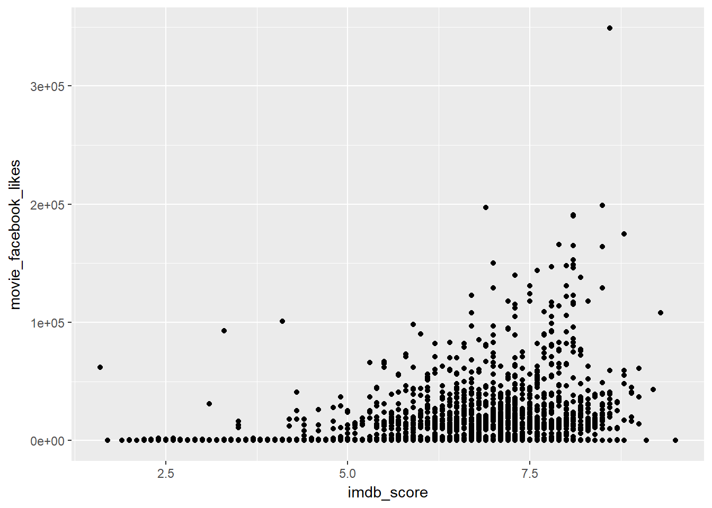
Each geom can only display certain aesthetics.
geom_point() uses the shape aesthetic but doesnt have linetype as one of its aesthetics.
shape = Generation
ggplot(data = pokemon) +
geom_point(mapping = aes(x = Attack, y = Defense,
shape = factor(Generation)))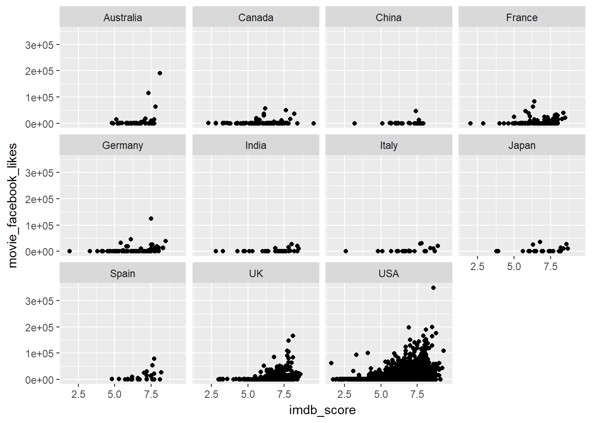
linetype = Generation
ggplot(data = pokemon) +
geom_point(mapping = aes(x = Attack, y = Defense,
linetype = factor(Generation)))## Warning: Ignoring unknown aesthetics: linetype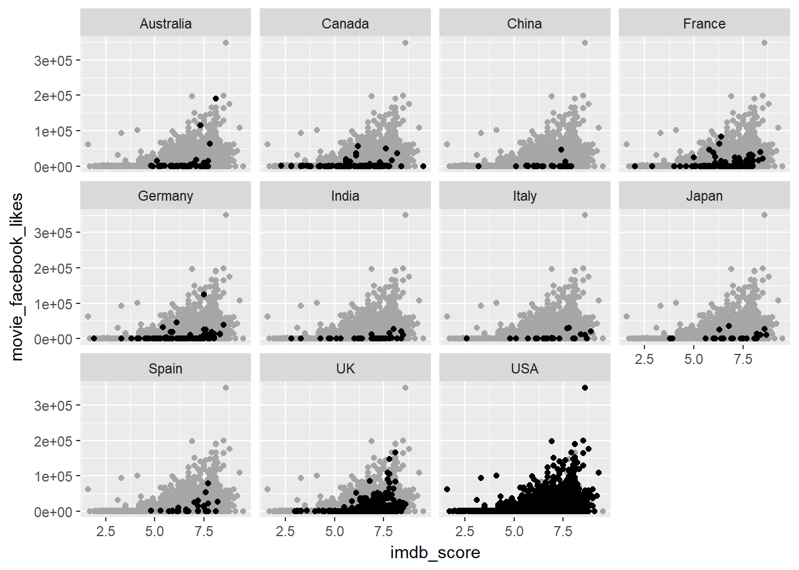
We can also add multiple layer either locally or globally or both.
Locally
ggplot() +
geom_point(data = pokemon, mapping = aes(x = Attack, y = Defense)) +
geom_smooth(data = pokemon, mapping = aes(x = Attack, y = Defense))## `geom_smooth()` using method = 'loess'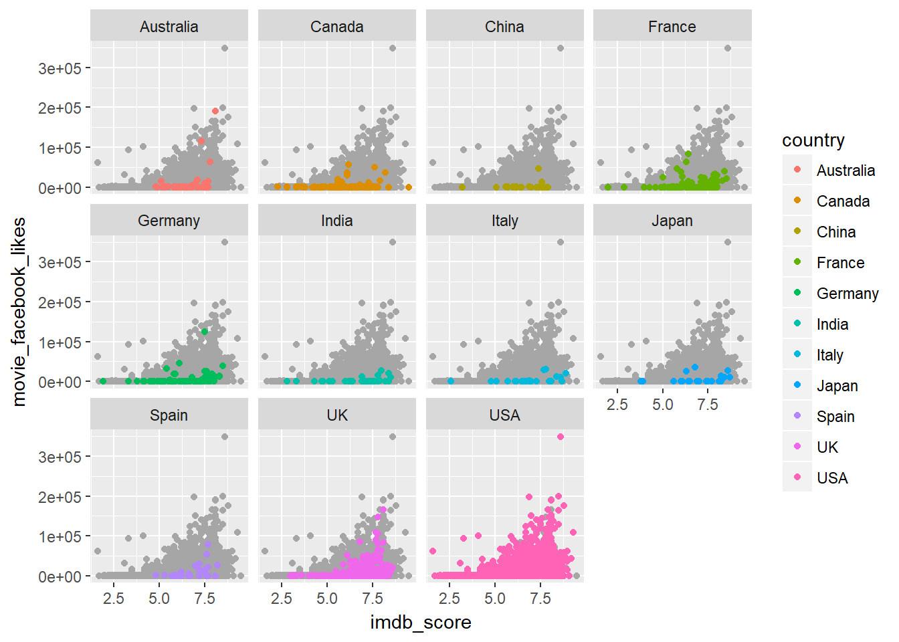
Globally
ggplot(data = pokemon, mapping = aes(x = Attack, y = Defense)) +
geom_point() +
geom_smooth() ## `geom_smooth()` using method = 'loess'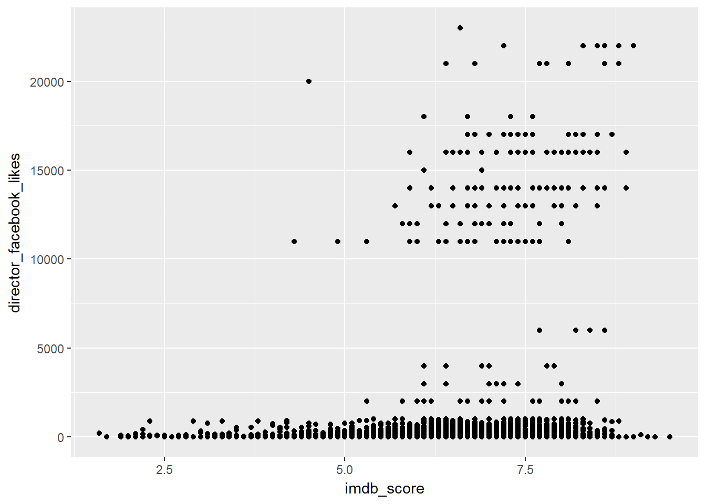
Both Locally and Globally
ggplot(data = pokemon, mapping = aes(x = Attack, y = Defense)) +
geom_point(mapping = aes(shape = factor(Generation))) +
geom_smooth(mapping = aes(linetype = factor(Generation))) ## `geom_smooth()` using method = 'loess'We can also use group and colour aesthetic together with multiple layers.
ggplot(data = pokemon, mapping = aes(x = Attack, y = Defense, colour = factor(Generation))) +
geom_point() +
geom_smooth(aes(group = factor(Generation)))## `geom_smooth()` using method = 'loess'2.6 Statistic
Every Geom have an associated statistic to it. However, sometimes we wish to specify a different statistical funcition. The Statistic Layer allows us to this.
This shows a list of all the available stat object in ggplot2
ls("package:ggplot2", pattern = "^stat")## [1] "stat_bin" "stat_bin_2d" "stat_bin_hex"
## [4] "stat_bin2d" "stat_binhex" "stat_boxplot"
## [7] "stat_contour" "stat_count" "stat_density"
## [10] "stat_density_2d" "stat_density2d" "stat_ecdf"
## [13] "stat_ellipse" "stat_function" "stat_identity"
## [16] "stat_qq" "stat_quantile" "stat_smooth"
## [19] "stat_spoke" "stat_sum" "stat_summary"
## [22] "stat_summary_2d" "stat_summary_bin" "stat_summary_hex"
## [25] "stat_summary2d" "stat_unique" "stat_ydensity"geom_bar() uses “bar” as its geom & “count” as its stat
ggplot(data = pokemon) +
geom_bar(mapping = aes(x = Type1))stat_count() uses “count” as its stat and “bar” as its geom.
ggplot(data = pokemon) +
stat_count(mapping = aes(x = Type1))
By changing the default statistic manually, we’l get a new geom, called geom_histogram(). Lets examine this step by step.
Initially, the plot looks like
ggplot(data = pokemon) +
geom_bar(mapping = aes(x = Total))Now we change to “bin”
ggplot(data = pokemon) +
geom_bar(mapping = aes(x = Total), stat = "bin")## `stat_bin()` using `bins = 30`. Pick better value with `binwidth`.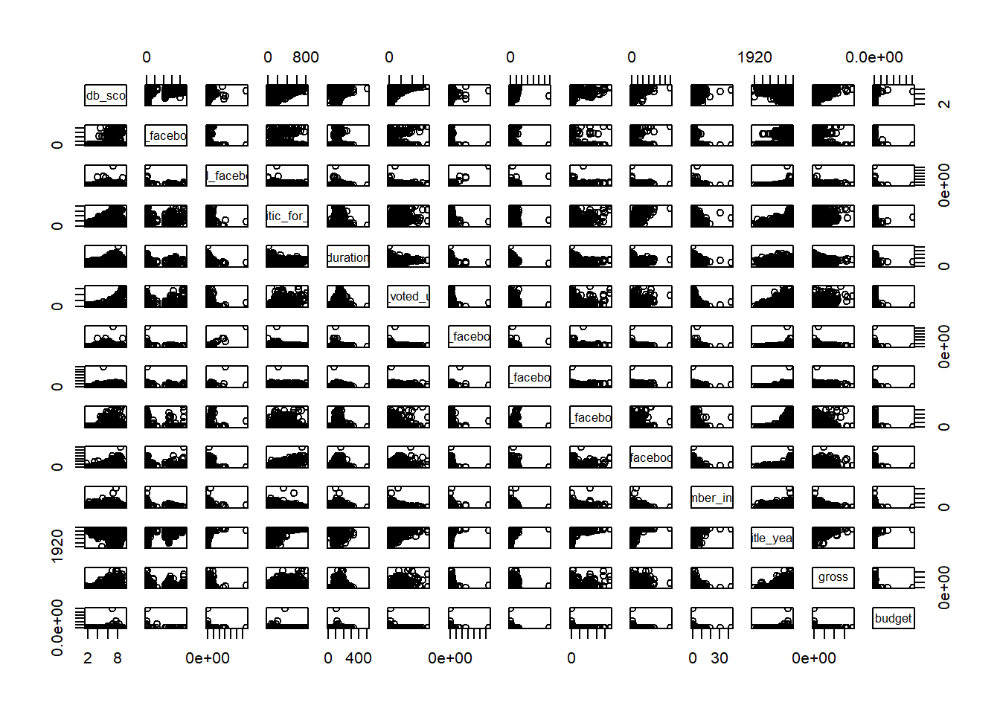
Which is same as..
ggplot(data = pokemon) +
geom_histogram(mapping = aes(x = Total))## `stat_bin()` using `bins = 30`. Pick better value with `binwidth`.2.7 Positions
The default position is “identity” for most geom. however we can specify the type of position we want manually.
This shows a list of all the available position object in ggplot2
ls("package:ggplot2", pattern = "^position")## [1] "position_dodge" "position_fill" "position_identity"
## [4] "position_jitter" "position_jitterdodge" "position_nudge"
## [7] "position_stack"First and foremost, to add colour to bar chart, we can specify the colour within the bar aesthetic. however this isnt really a useful visualisation to us.
ggplot(data = pokemon) +
geom_bar(mapping = aes(x = Type1, colour = factor(Generation)))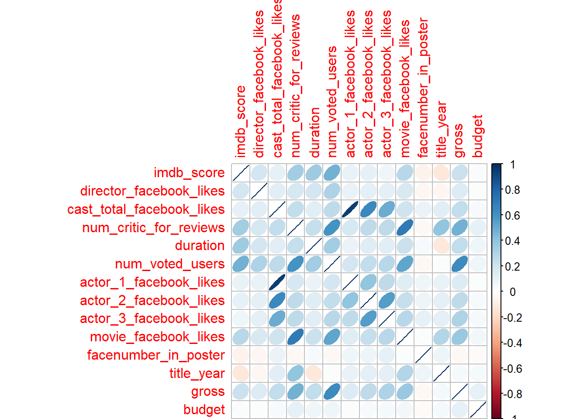
We can instead specify fill over colour.
ggplot(data = pokemon) +
geom_bar(mapping = aes(x = Type1, fill = factor(Generation)))
There are 3 adjustments that primarily apply to bars. They are :
position_stack()
position_dodge()
position_fill()
Stack
ggplot(data = pokemon, mapping = aes(x = Type1, fill = factor(Generation))) +
geom_bar(position = "stack") Dodge
ggplot(data = pokemon, mapping = aes(x = Type1, fill = factor(Generation))) +
geom_bar(position = "dodge")Fill
ggplot(data = pokemon, mapping = aes(x = Type1, fill = factor(Generation))) +
geom_bar(position = "fill")
2.8 Facets
Allows us to splits up a plot in to multiple subplots.
This shows a list of all the available facet object in ggplot2
ls("package:ggplot2", pattern = "^facet")## [1] "facet_grid" "facet_null" "facet_wrap"There are 2 types of facets:
facet_wrap()
facet_grid()
Both uses the formula notation, ~ , as the 1st arguments. Both variables should be discrete/categorical and place before and after the ~.
facet_wrap() splits up our plot by a single variable.
ggplot(data = pokemon) +
geom_point(mapping = aes(x = Attack, y = Defense)) +
facet_wrap( ~ Type1, nrow = 1)facet_grid() splits up our plot according to 2 variables.
ggplot(data = pokemon) +
geom_point(mapping = aes(x = Attack, y = Defense)) +
facet_grid(Type2 ~ Type1)